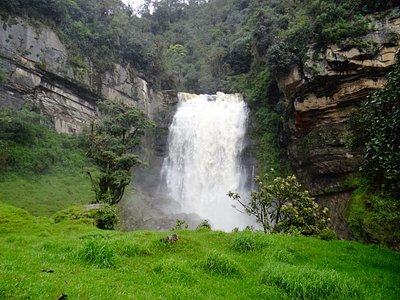

| Lugares | Fotos | descripcion |
|---|---|---|
| Cascadas de Sueva | . | Una hermosa y caudalosas caída de agua que nace en el páramo de Chingaza. La cascada de Nemustén o de
Sueva se ve salir de un exuberante bosque andino y rocas dándole un toque mágico a tu experiencia..
Ubicado en la provincia del Guavio, pasando el páramo de Guasca se encuentra un espectacular lugar
donde la confluencia de varios ríos forman la cuenca del río Sueva y podremos encontrar varias cascadas
de diferentes tamaños y caudal, siendo la principal la cascada de Nemustén. Los senderos que recorreremos se encuentran próximos a la hidroeléctrica de Sueva. Para llegar a la cascada tendremos que recorrer hermosos caminos de herradura cercados por rocas y musgo. Siendo una de las cascadas de mayor caudal en Cundinamarca es un lugar que no te debes perder. |
| Embalse el Guavio |  . . |
El embalse del Guavio es un embalse de Colombia creado por la presa Alberto-Lleras que alimenta la Central
Hidroeléctrica del Guavio. La presa está ubicada en la cabecera municipal del municipio de Gachalá, en el
departamento de Cundinamarca, y represa las aguas de los ríos Guavio, Batatas y Chivor.
|